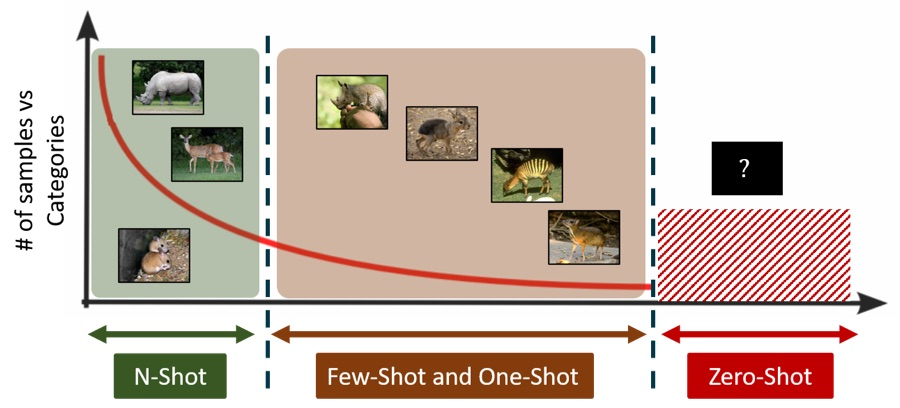
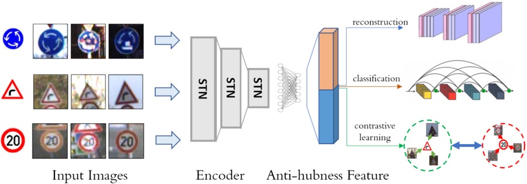
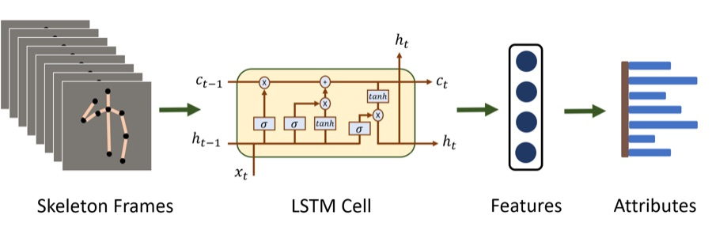
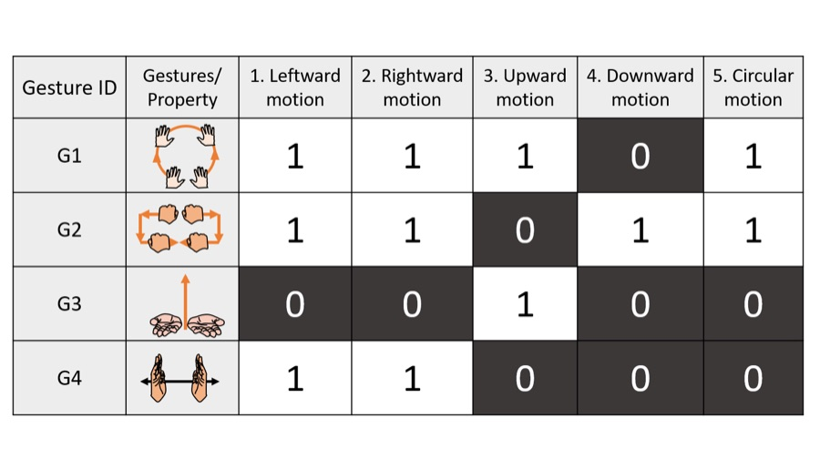
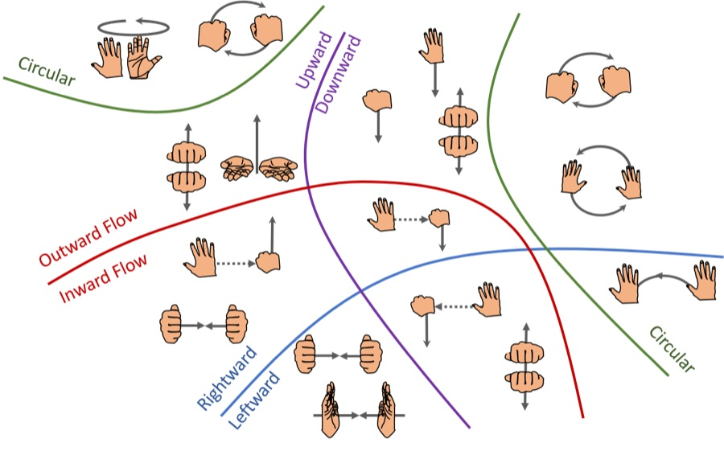
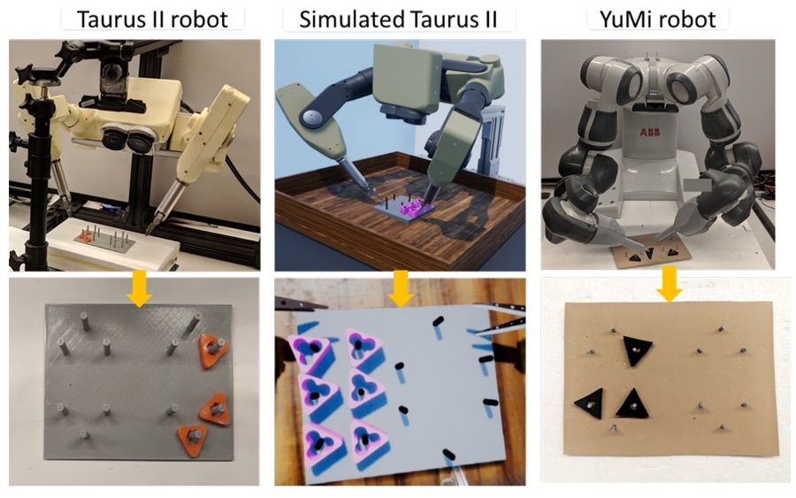
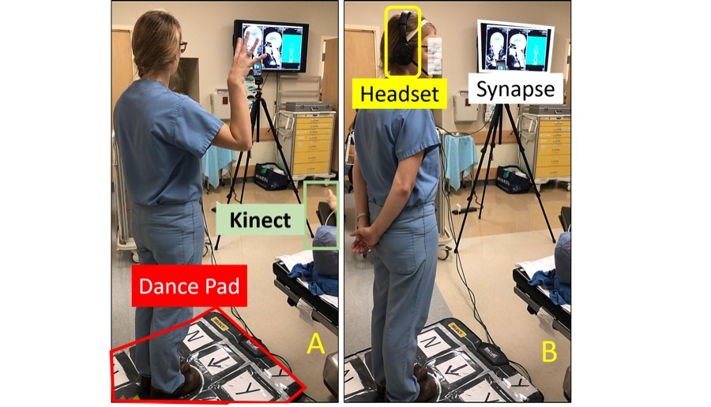

Ongoing theme
Human-like learning systems
- Machines need hundreds of examples to learn a class; humans need a few, or just a description
- Few-, one-, and zero-shot learning as a path to continual, human-like learning







Full list on Google Scholar.